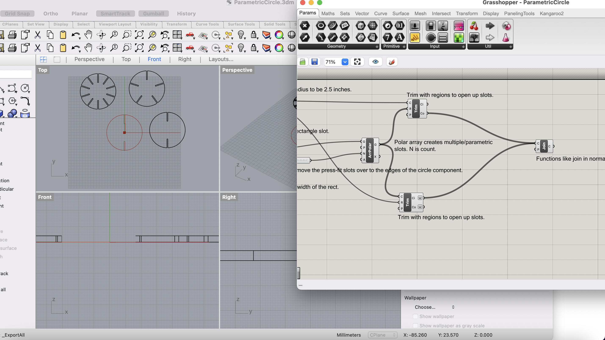
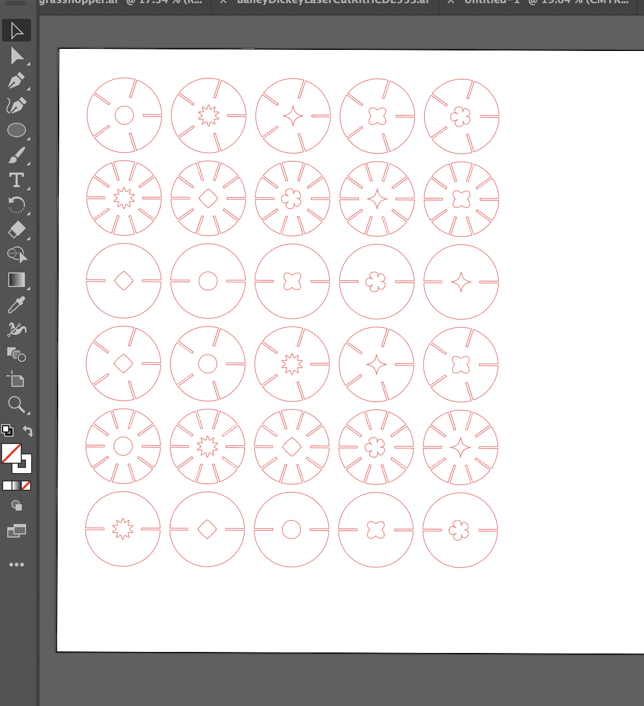
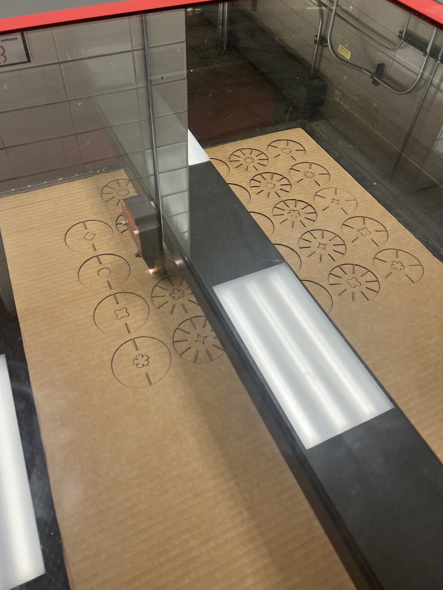
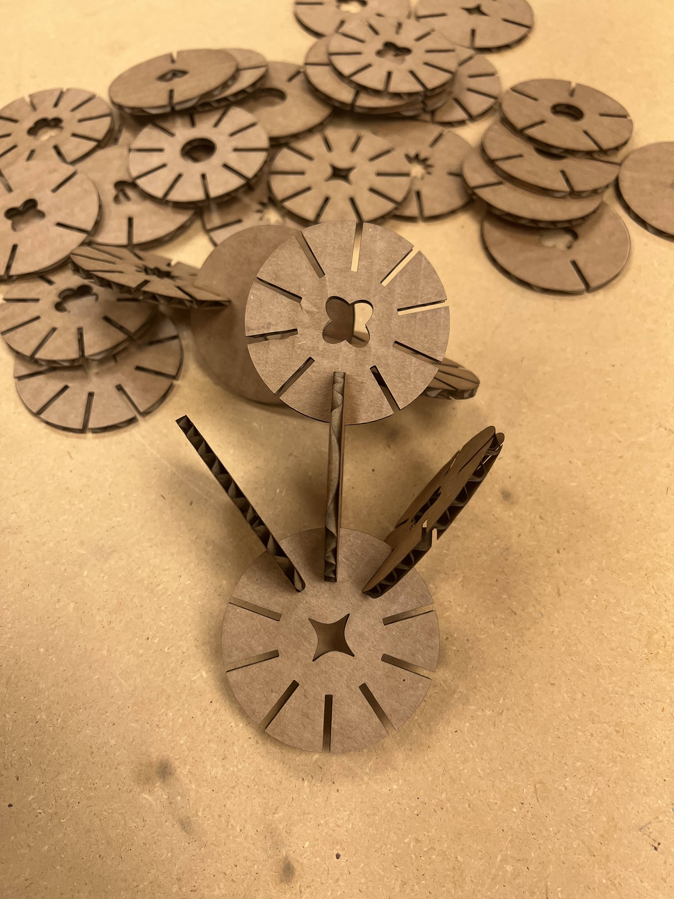
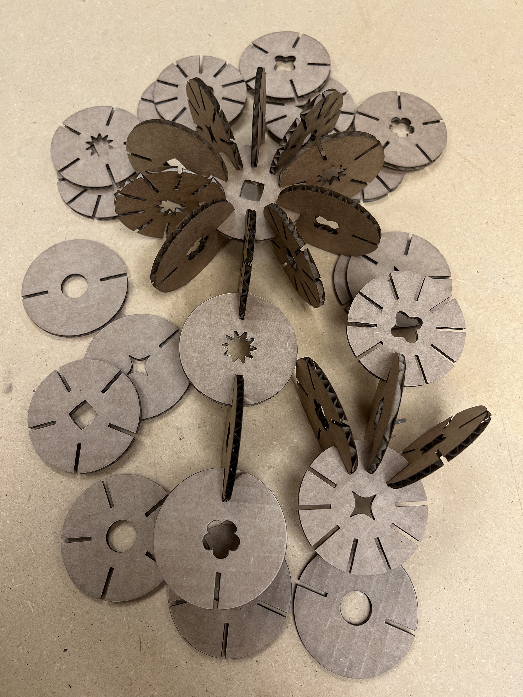
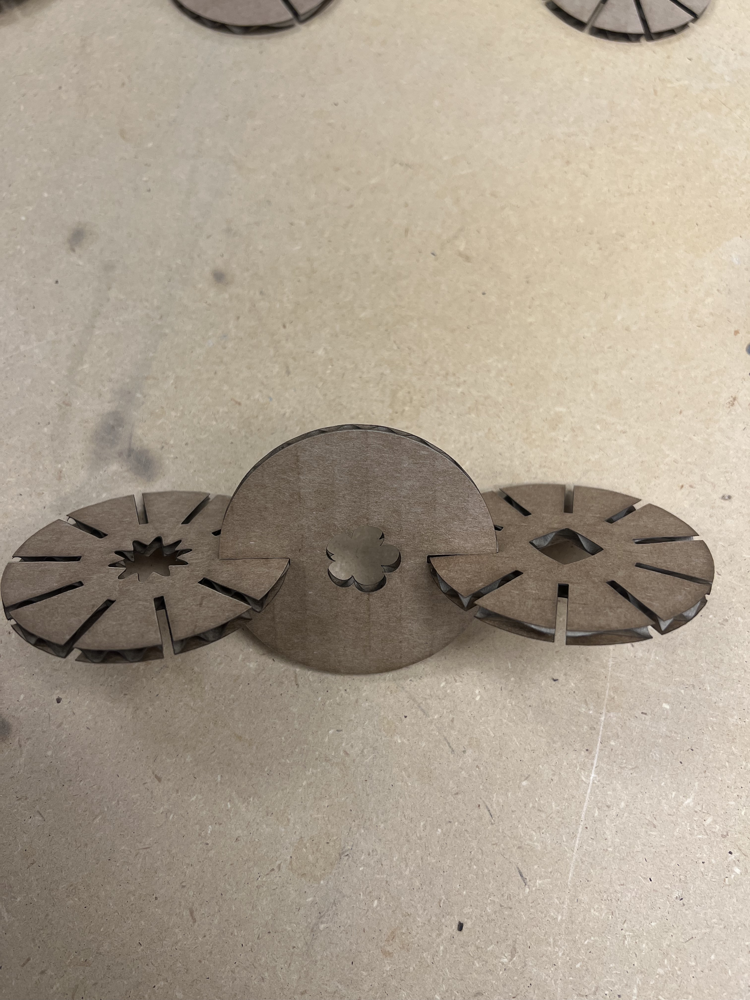
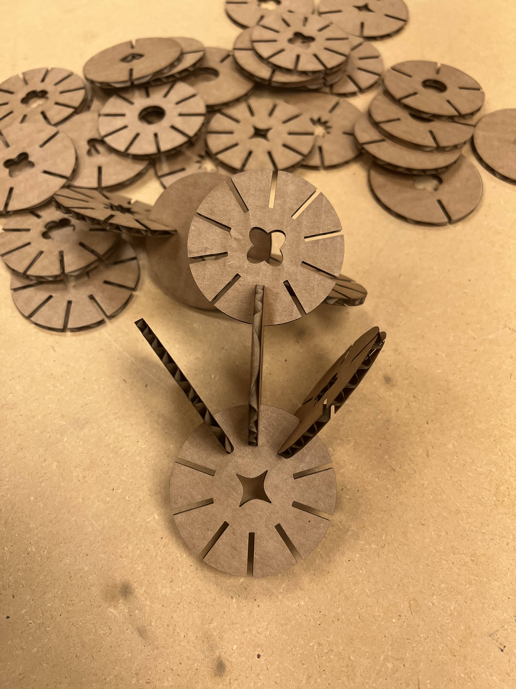
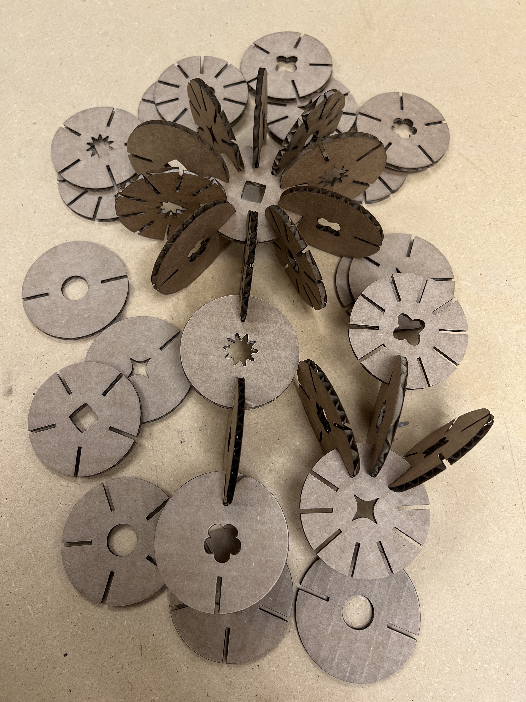
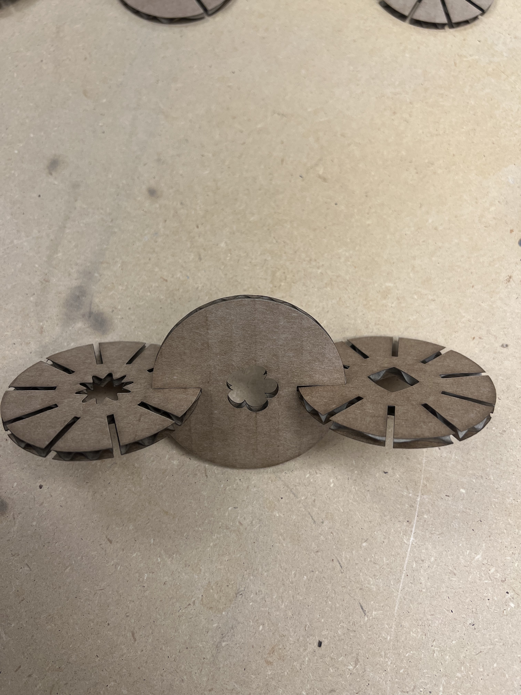

Assignment 3: Getting started with 3D printing!
Assembling my 3D printer and creating my first test prints!

Assembling My 3D Printer
Approximate time to complete: 4.5 hours of assembly, 45 minutes calibrating and making minor tweaks to the machine.
The Assembly Process
I assembled the printer long before this assignment came about, so I did not document every step of the process. I carefully followed the printed instructions that came with the kit and ensured that I kept my parts and tools organized throughout the process. I found that assembly was generally a straightforward process and, luckily, did not face any major roadblocks. After I completed the physical assembly process, I followed the assignment instructions and the troubleshooting deck to make minor adjustments to the printer. I found that my extruder did not need to be tightened as it was not wiggling when I checked on it. Then I check for loose screws and checked my printer’s belts to ensure that they were taught. I found that my belt was slightly loose, so I went ahead and increased the tension slightly to ensure that my circular objects would not become skewed while printing. I also struggled with threading my filament through the extruder until I realized that cutting the end of the filament at an angle would help it glide through the opening more easily. Finally, I went through the build plate leveling process by downloading the Filament Friday bed leveling protocol. I spent roughly 8 minutes using a piece of paper to manually adjust each build plate level screw. I then ran the build plate level test print and ran my finger along each extruded line to ensure proper adhesion and that my plate was level. I somehow managed to level my printer properly on my first try, so I was able to move on to my first test printed fairly quickly.
Assembly Documentation
   





Test Print Process
Source Files